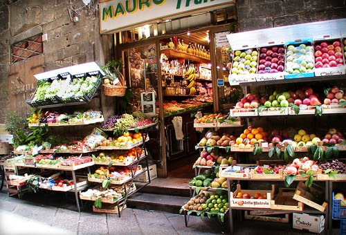

A melhor Quitanda do Brasil agora a poucos cliques de você.
Venha conhecer e experimentar a qualidade de nossos produtos,
cultivados orgânicamente e selecionados a dedo por nossos especialistas.
A Quitanda Nossa Quitanda possui parcerias com os mais renomados agricultores do Brasil,
que não usam agrotóxicos e reutilizam a terra para assim tentarem diminuir ao máximo
as agressões ao solo do nosso Planeta.